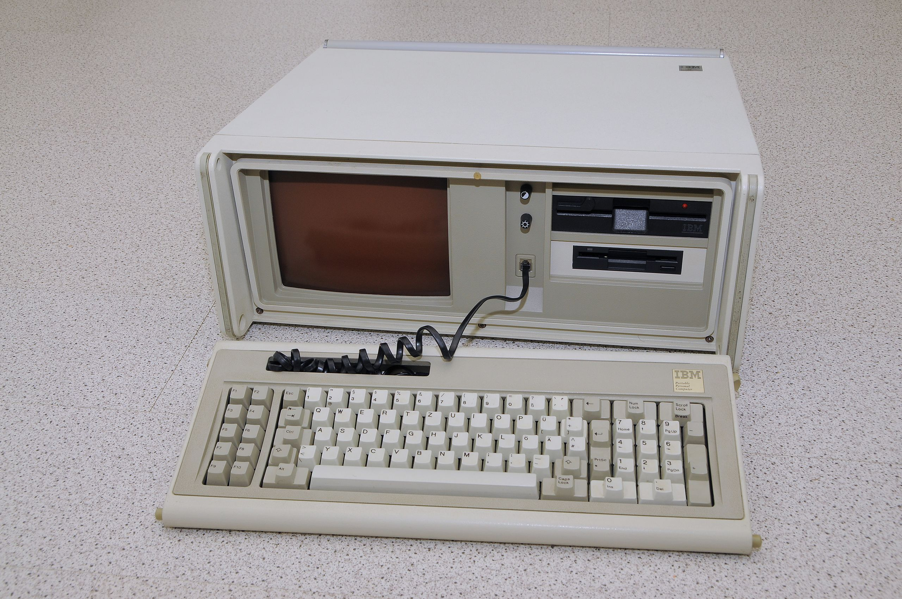
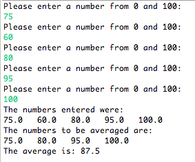
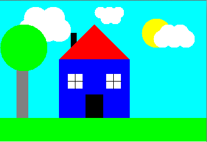

Growing up, society was not very computer-dependent as it is today. We went to
the library when we had to do research for a school project or paper. If I
remember correclty, my family's first computer was an IBM 5155 portable personal
computer which had to boot from a floppy drive and ran DOS.

IBM 5155 Portable Personal Computer
Seagate Crystal
My first coding expeirence was at work while using a program (Seagate
Crystal) to generate reports. This program pulls data from a database and
analyzes it according to how the user writes the report. It can be written to
simply return raw data or show visual representations such as graphs. It can
also be programmed to perform mathematical calculations to find sub-totals,
totals, and percentages (just to name a few). At work, these reports are
referred to as "Crystal Reports" or "Crystals" for short. It is amazing on how
the final product can look so simple, yet no one is aware of the complicated
formulas written in order to get those results. Aside from familiar text
boxes, the majority of all data shown on the report has some sort of formula
or code behind it. I self-taught myself by playing and tweaking with reports
given to me, then writing my own from scratch. I developed this skill
exponentially and am now able to write extremely complicated reports. (Due to
sensitive content, I am unable to show pictures of reports that I have made.)
Java
It was because of my brief exposure to coding through "Crystal Reports"
that I became very interested in actual computer programming and coding.
My first official exposure to legitimate coding was at IIT: ITM 311
Introduction to Software Development. This course taught me the basics
of using Java which progressed into more complicated coding. Although
this class was completely foreign and at times very complex, I truly
enjoyed learning how to code. Shown below are 2 assignments, the first
was a simpler one where prompts asked for user input and then
calculations are done. The second is a "drawing" of a house done
completely with coding. It was both a challenging and fulfilling course
which reinforced my fondness for programming.
"Taking the Average" Java Code
//Write a complete program that declares an array of any five integers, from 0 to 100 , and
//averages only those integers which are greater than 70 .
//Programmer: C. L.
//Date: 2/26/2016
//ITM 311 section 02
//name of program: Homework6.java
import java.util.Scanner;
public class HW6
{
public static void main(String[]args)
{
//declare and initialize variables
double[] originalArray = new double[5];
double average=0;
double first=0;
double second=0;
double third =0;
double fourth=0;
double fifth=0;
double sum=0;
double count=0;
double count2=0;
double count3=0;
double count4=0;
double count5=0;
double totalcount =0;
Scanner input = new Scanner(System.in);
int index = 0;
//loop to get original array input by user: originalArray[index]
while (index < 5)
{
System.out.println("Please enter a number from 0 and 100:");
originalArray[index]=input.nextInt();
//allow only numbers from 0 to 100
while(originalArray[index]>100||originalArray[index]<0)
{
System.out.print("You entered an invalid number.\nPlease enter a number from 0 and 100: ");
originalArray[index]=input.nextInt();
}
index++;
}
//display numbers entered by user
System.out.println("The numbers entered were: ");
for(int i=0; i<originalArray.length; i++)
System.out.print(originalArray[i]+" ");
System.out.println("\nThe numbers to be averaged are: ");
//calculate sum of eligible numbers
if (originalArray[0]>70 ||originalArray[1]>70 ||originalArray[2]>70 || originalArray[3]>70 || originalArray[4]>70)
{
if(originalArray[0]>70)
{first=originalArray[0];
count =1;
}else {first=0;count=0;}
if(originalArray[1]>70)
{ second=originalArray[1];
count2 =1;}else {second=0;count2=0;}
if(originalArray[2]>70)
{third=originalArray[2];
count3=1;
}else {third=0;count3=0;}
if(originalArray[3]>70)
{ fourth=originalArray[3];
count4=1;}else {fourth=0;count4=0;}
if(originalArray[4]>70)
{ fifth=originalArray[4];
sum = first+second+third+fourth+fifth;
count5=1;
}else {sum=first+second+third+fourth;
}
//calculate average and denominator
totalcount=count+count2+count3+count4+count5;
average = sum/totalcount;
}
//prints numbers greater than 70
if(originalArray[0]>70 ||originalArray[1]>70 ||originalArray[2]>70 || originalArray[3]>70 || originalArray[4]>70)
{
if(originalArray[0]>70)
{
System.out.print(originalArray[0]+" ");
}
if(originalArray[1]>70)
{
System.out.print(originalArray[1]+" ");
}
if(originalArray[2]>70)
{
System.out.print(originalArray[2]+" ");
}
if(originalArray[3]>70)
{
System.out.print(originalArray[3]+" ");
}
if(originalArray[4]>70)
{
System.out.print(originalArray[4]+" ");
}
}else System.out.print("NONE");
if(originalArray[0]>70 ||originalArray[1]>70 ||originalArray[2]>70 || originalArray[3]>70 || originalArray[4]>70)
{
//display average
System.out.println("\nThe average is: "+average);
}
}
}
Picture of output for source code "average"

"Drawing House" Java Code
import java.applet.*;
import java.awt.*;
public class DrawingHouse extends Applet
{
public void init()
{
setSize(350,240);
}
public void paint(Graphics g)
{
//A standard
setBackground(Color.cyan);
//Draw clouds
g.setColor(Color.white);
g.fillOval(30,30,40,40);
g.fillOval(60,30,40,40);
g.fillOval(80,30,40,40);
g.fillOval(40,10,40,40);
g.fillOval(70,10,40,40);
g.fillOval(160,10,20,20);
g.fillOval(175,10,20,20);
g.fillOval(190,10,20,20);
g.fillOval(170,20,20,20);
g.fillOval(185,20,20,20);
//Draw roof
g.setColor(Color.red);
int x[]={100,160,220};
int y[]= {100,40,100};
Polygon poly = new Polygon(x,y,3);
g.fillPolygon(poly);
//Draw body of house
g.setColor(Color.blue);
g.fillRect(100,100,120,120);
//Draw sun
g.setColor(Color.yellow);
g.fillOval(240,30,50,50);
//more clouds
g.setColor(Color.white);
g.fillOval(260,50,30,30);
g.fillOval(280,50,30,30);
g.fillOval(300,50,30,30);
g.fillOval(270,40,30,30);
g.fillOval(290,40,30,30);
//Draw chimney
g.setColor(Color.black);
g.fillRect(120,55,10,30);
//Door= black, Roof= magenta & 2 windows
g.setColor(Color.black);
g.fillRect(145,160,30,60);
g.setColor(Color.red);
g.fillPolygon(poly);
//Draw window 1
g.setColor(Color.white);
g.fillRect(115,125,25,25);
//Draw window 1 crossbar
g.setColor(Color.black);
g.drawLine(115,137,140,137);
g.drawLine(127,125,127,150);
//Draw window 2
g.setColor(Color.white);
g.fillRect(180,125,25,25);
//Draw window 2 crossbar
g.setColor(Color.black);
g.drawLine(180,137,205,137);
g.drawLine(192,125,192,150);
//Draw grass
g.setColor(Color.green);
g.fillRect(0,200,350,40);
//Draw tree
g.setColor(Color.gray);
g.fillRect(28,100,20,100);
g.setColor(Color.green);
g.fillOval(0,40,80,80);
}
}
Picture of output for source code "DrawingHouse"

Web Design
I can say with confidence that my first "web design" experience was when
MySpace first came around. I remember
looking up different configurations in order to get different fonts,
colors, styles, etc. This course (ITMD 361) is my first real introduction
to real web-design. I look forward to learning and mastering the aspects
of making a real, professional website.